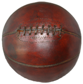

Canada is a country that is part of the North American continent. Canada is bordered by the Pacific, Atlantic, and Arctic oceans and it has a total of 10 provinces and 3 territories
which make Canada the second largest country in land size (3,511,023 square miles) behind Russia. Usually most of Canada has a very cold climate during the wintertime, however, it can
also be warm during the summertime as well especially in the southern parts of Canada. The capital city of Canada is Ottawa (located in Ontario) and Canada's main cities are Toronto
(located in Ontario), Montreal (located in Quebec), and Vancouver (located in British Columbia). The geography of Canada is divded into five main regions, which are the West Coast, Prairie
provinces, the North, Atlantic region, and Central Canada.
Toronto, Ontario
Picture of Toronto, Ontario, largest city in Canada
Here are some of the national symbols that help make Canada a very unique and special place:
| Name | Symbols |
|---|---|
| National winter sport | Ice hockey |
| National summer sport | Lacrosse |
| National dishes/foods | Poutine and Nanaimo bars |
| National animal | Beaver |
| National colours | Red and white |
| National anthem | O Canada | National motto | A Mari Usque Ad Mare (From sea to sea) |

Although hockey and lacrosse are Canada's offical winter and summer sports, Canada overall enjoys a wide variety of sports and activities year round. Sports such as tennis, swimming, and rugby have been enjoyed by Candians every year. Also, Canada has been a major participant in many international sporting events, such as Olympics and World Junior Hockey Championships. Canada has hosted some international sports events as well, including the 2010 winter olympics in Vancouver and the 2015 and 2017 World Junior Hockey championships in Toronto and Montreal. Additionally, Canada also has teams in most of the proffesional sports leagues in North America, including the National Basketball Association (NBA), National Hockey League (NHL), and Major League Baseball (MLB).

1. The sport of Basketball was invented in Springfield, Massachusetts by a Canadian named Dr. James Naismith in 1891.
2. About 20% of the freshwater we use each day can be found in Canada.
3. The average age of Canadians is about 40 years old.
4. Macaroni and cheese is the most commonly used grocery item in Canada.
5. The word "Canuck" is a term used for a Canadian.
6. About 40% of Canadians are Roman Catholics while about 20% of Canadians are Protestant.
7. The telephone was invented by Canadian Aleander Graham Bell and the snowmobile was invented by Joseph-Armand Bombardier.
8. The Hawaiian pizza was made in Canada.
9. Canada's only desert is located in the interior region of British Columbia.
10. Canada has the biggest coastline in the world.
 There were plenty of recent events that helped shape Canada's success today and during the past few years. In Febuary 2010, Canada was able to record the most ever gold medals in a winter olympics
during the 2010 winter games in Vancouver. In 2012, the Canadian Broadcasting Company (CBC) celebrated its 60th aniversary of broadcasting service to Canadians. In October 2015, Liberal leader Justin
Trudeau succeeded Conservative leader Stephen Harper as Prime Minister after the Liberal party won more seats than the Conservative party during the elections, causing the conservative party to be the
offical opposition party to the Liberals. In 2017, Canada celberated its 150th year of confederation. However, the most recent significant event occured in 2018, when Olympic figure skaters Tessa Virtue
and Scott Moir are named as Canada's flag bearers for the 2018 Winter Olympics in North Korea during the opening and closing ceremonies.

Justin Trudeau
Canada's 42nd and current Prime Minister
Click on the names of each province (British Columbia, Alberta, Saskatchewan, Manitoba, Ontario, and Quebec) to see the events and symbols of each region through a pop up window in this page.